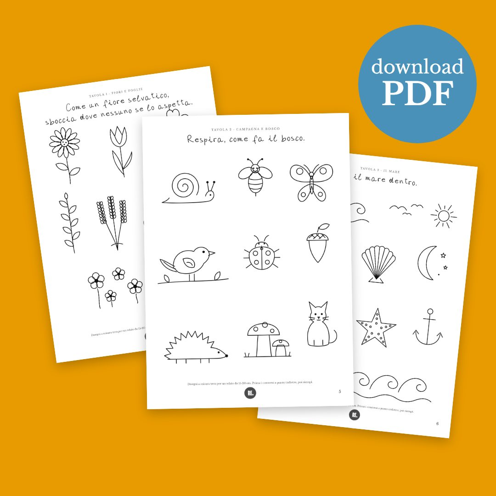

Disegni per ricamo a mano, semplici e da stampare
Fiori, animali di campagna, il mare, il Natale, due alfabeti, scritte e bordi: disegni da ricamare a linee chiare, da stampare a casa e portare su una federa, un tovagliolo, una camicia di cotone o di lino.
PDF di 9 pagine A4: come si fa e 6 tavole · si scarica subito dopo il pagamento

Sei tavole da ricamare
- Fiori e foglie: margherita, tulipano, lavanda, campanule, un ramo
- Campagna e bosco: chiocciola, ape, farfalla, coccinella, uccellino, riccio, funghi, gatto
- Il mare: onde, barca a vela, conchiglia, stella marina, pesce, àncora, faro, luna
- Natale: fiocco di neve, albero, candela, pacchetto, pallina, agrifoglio, casetta, muffola
- Due alfabeti e i numeri, per ricamare un nome o una data
- Scritte, cornici e bordi per orli, tasche e polsini
Nelle prime tre pagine: come ricalcare il disegno in controluce o stamparlo su carta idrosolubile, e come ricamarlo, con le foto dei punti.

Disegni per ricamo semplici: da dove cominciare
Un disegno semplice per il ricamo a mano ha poche linee chiare e niente sfumature: i contorni si ricamano tutti con lo stesso punto, e i dettagli si aggiungono dopo. Per il primo lavoro conviene un soggetto piccolo, come una margherita, un'onda o un fiocco di neve, su un tessuto di cotone chiaro e liscio.
Gli alfabeti servono per ricamare un nome o una data: sul bavaglino o sulla copertina di un neonato, su un asciugamano, su un tovagliolo da regalare. I bordi sono pensati per orli, tasche e polsini, dove una riga di ricamo basta a cambiare un capo.
Disegni da stampare o da ricalcare?
Tutte e due le cose. Le tavole sono pagine A4 che stampi a casa: se il tessuto è chiaro e sottile, ricalchi il disegno in controluce su una finestra; altrimenti stampi la tavola su carta idrosolubile, la attacchi al tessuto, ricami sopra e la sciogli in acqua a ricamo finito. Questi metodi e la carta carbone per i tessuti scuri, con quale scegliere, li ho spiegati nell'articolo come trasferire un disegno da ricamare sul tessuto.
I punti base del ricamo, su YouTube
Prima tutti i contorni a punto indietro, poi le parti interne a punto erba o spaccato, e i nodini per occhi e puntini. Li spiego uno per uno nel video gratuito sul canale di Repunto.
Guarda il tutorial dei punti base →
Come porto il disegno sul tessuto?
Due modi, spiegati passo passo nel PDF: metti il foglio su una finestra luminosa, ci appoggi sopra un tessuto di cotone o lino chiaro e ricalchi il disegno con una matita; oppure stampi la tavola su carta idrosolubile, la attacchi al tessuto, ricami sopra e la sciogli nell'acqua.
Sono adatti a chi comincia?
Sì, sono disegni a linee semplici. Se hai già provato e vuoi qualcosa di più ricco, c'è il livello 2, Onirico.
Vanno bene per il punto croce?
No: sono disegni a linee, pensati per il ricamo libero a mano (punto indietro, punto erba, punto spaccato, nodini). Il punto croce invece si ricama su uno schema a quadretti.
Ci sono disegni da ricamare gratis?
Il video dei punti base è gratis sul canale YouTube di Repunto, e nelle risorse gratuite trovi tabelle e guide da scaricare. Le sei tavole di disegni sono nel PDF a 6 €.
Come ricevo il PDF?
Dopo il pagamento si apre la pagina con il pulsante per scaricare il PDF, e ti arriva un'email con lo stesso link, valido 30 giorni.
Leggi anche
Disegni da ricamare a mano: come trasferirli
Disegni pronti da ricamare e tre modi per trasferirli sul tessuto: finestra, carta carbone, carta idrosolubile. Quale scegliere e come si fa, passo passo.
Disegni per ricamo Onirico, livello 2: upupa, camaleonte
Disegni da ricamo a mano per chi ha già pratica: upupa, pappagallo, camaleonte, libellula e coccinella. PDF da stampare su carta idrosolubile o da ricalcare.
Risorse gratuite di cucito e riciclo tessile: tabelle, guide e video
Tabelle da stampare, guide PDF e video gratuiti per cucire, riparare e riciclare vestiti e tessuti: simboli di lavaggio, 100 idee di upcycling, ricamo.